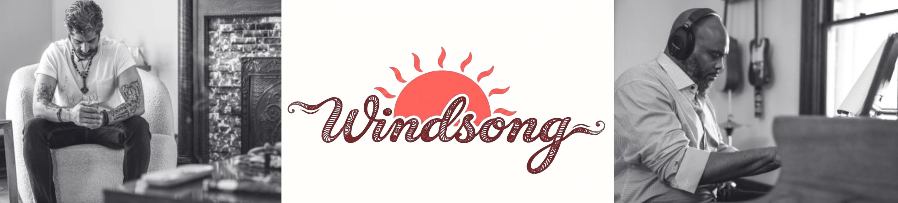
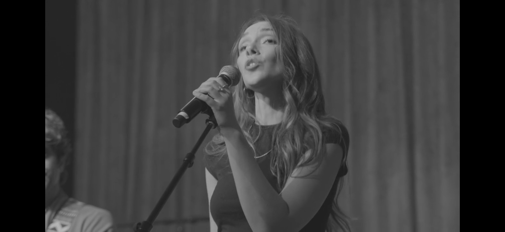

Uday is an entrepreneur with a background in hotels, film and music. He was raised in Chicago, IL and grew up playing guitar in bands through high school and college. He began writing songs at 18 years old.



Uday is an entrepreneur with a background in hotels, film and music. He was raised in Chicago, IL and grew up playing guitar in bands through high school and college. He began writing songs at 18 years old.

Brandon grew up in Nashville, TN. He was first exposed to music through church — playing piano, organ, and singing in the choir. Brandon went on to study at Fisk University, and was a member of the prestigious Fisk Jubilee Singers.

Savanna is a classically trained vocalist with extensive choir and ensemble experience.

Lacy is a conservatory-trained concert violinist featuring collaborations alongside Shania Twain, Deadmau5 and Dua Lipa.

John is a session bass player and has toured with Darius Rucker for 18 years.

Joe plays drums and won a Grammy for live performance with the Zappa Band. He also toured with Joe Satriani and Duran Duran.

Jeff is a producer, guitar and keyboard player who tours with The Voidz (Julian Casablanca) and Cigarettes After Sex.